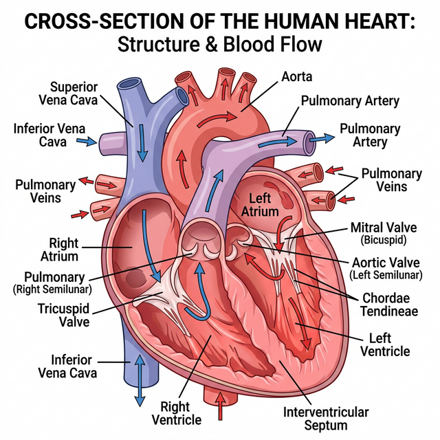

Chapter 15: Body Fluids and Circulation
You have learnt that all living cells have to be provided with nutrients, $O_2$ and other essential substances. Also, the waste or harmful substances produced, have to be removed continuously for healthy functioning of tissues. It is therefore, essential to have efficient mechanisms for the movement of these substances to the cells and from the cells.
Blood is the most commonly used body fluid by most of the higher organisms including humans for this purpose. Another body fluid, lymph, also helps in the transport of certain substances.
Blood
Blood is a special connective tissue consisting of a fluid matrix, plasma, and formed elements.
- Plasma: A straw coloured, viscous fluid constituting nearly $55%$ of the blood. $90-92%$ of plasma is water and proteins contribute $6-8%$ of it. Fibrinogen, globulins and albumins are the major proteins.
- Formed Elements: Erythrocytes, leucocytes and platelets collectively are called formed elements and they constitute nearly $45%$ of the blood.
- Erythrocytes (RBCs): The most abundant of all the cells in blood. A healthy adult man has, on an average, 5 million to 5.5 million of RBCs $mm^{-3}$ of blood.
- Leucocytes (WBCs): Colourless due to the lack of haemoglobin. They are nucleated and are relatively lesser in number which averages $6000-8000$ $mm^{-3}$ of blood.
- Platelets: Also called thrombocytes, are cell fragments produced from megakaryocytes (special cells in the bone marrow).
Human Circulatory System
Human circulatory system, also called the blood vascular system consists of a muscular chambered heart, a network of closed branching blood vessels and blood, the fluid which is circulated.
Heart, the mesodermally derived organ, is situated in the thoracic cavity, in between the two lungs, slightly tilted to the left. It has the size of a clenched fist. It is protected by a double walled membranous bag, pericardium, enclosing the pericardial fluid. Our heart has four chambers, two relatively small upper chambers called atria and two larger lower chambers called ventricles.

Figure 15.1: Sectional view of the human heart
Cardiac Cycle and Output
To begin with, all the four chambers of heart are in a relaxed state, i.e., they are in joint diastole. Blood flows into atria, leading to atrial systole, which pumps blood into ventricles. The ventricular systole follows, heavily pumping blood out into the pulmonary artery and the aorta.
The volume of blood pumped out by each ventricle per minute is called the cardiac output and it is equal to the product of stroke volume (approx. $70$ mL) and heart rate (approx. $72$ beats/min), which averages out to $5000$ mL or $5$ litres in a healthy individual.
Electrocardiograph (ECG)
An ECG is a graphical representation of the electrical activity of the heart during a cardiac cycle. The standard ECG consists of:
- P-wave: Represents the electrical excitation (or depolarisation) of the atria, which leads to the contraction of both the atria.
- QRS complex: Represents the depolarisation of the ventricles, which initiates the ventricular contraction.
- T-wave: Represents the return of the ventricles from excited to normal state (repolarisation).
Competency Based Questions (Previous Years & Sample Papers)
Q1. Cardiac output ($CO$) is defined mathematically as the product of Heart Rate ($HR$, in beats/min) and Stroke Volume ($SV$, in mL/beat): $CO = HR \cdot SV$. During intense aerobic exercise, a highly trained athlete’s heart rate increases to $180$ beats/min, and their Stroke Volume increases to $140$ mL/beat. Calculate the athlete’s cardiac output during this exercise in Liters per minute. If a normal resting cardiac output is roughly $5.0$ L/min, by what factor has the athlete’s heart increased its pumping efficiency to meet the immense oxygen demands of the skeletal muscles?
Answer
Mathematical Calculation: Given: $HR_{exercise} = 180 \text{ beats/min}$ $SV_{exercise} = 140 \text{ mL/beat}$
Calculate $CO_{exercise}$: $$ CO = HR \cdot SV $$ $$ CO = 180 \text{ beats/min} \cdot 140 \text{ mL/beat} $$ $$ CO = 25,200 \text{ mL/min} $$
Convert mL to Liters ($1$ L = $1000$ mL): $$ CO = \frac{25,200}{1000} = \mathbf{25.2 \text{ L/min}} $$
Comparing to resting CO: Given $CO_{resting} = 5.0 \text{ L/min}$ $$ \text{Factor} = \frac{CO_{exercise}}{CO_{resting}} = \frac{25.2}{5.0} = \mathbf{5.04} $$
The athlete’s heart has increased its pumping output by a factor of roughly $5$ times (or increased by $400%$) compared to its resting state, effectively circulating the entire blood volume of the body $5$ times a minute to satisfy the immense oxygen requirement of the contracting muscles.
Q2. The universal donor and universal recipient blood groups in the ABO system are traditionally taught as O negative (O-) and AB positive (AB+), respectively. Consider a patient with blood type B-. List all the possible blood types this patient can safely receive in a massive transfusion without triggering an acute hemolytic transfusion reaction. Genetically, what happens regarding antigens and antibodies if this patient mistakenly receives A+ blood?
Answer
Safe Transfusions for B- patient: The B- patient’s red blood cells have “B” antigens and lack the “Rh(D)” antigen. Therefore, the patient’s plasma naturally contains pre-formed anti-A antibodies, and will produce anti-Rh antibodies if exposed to Rh+ blood. They can safely receive only:
- B- (exact match)
- O- (universal donor for RBCs, lacks A, B, and Rh antigens)
Reaction to A+ blood: If the B- patient receives A+ blood, two major immunological incompatibilities occur:
- ABO Mismatch: The patient’s pre-existing anti-A antibodies will immediately recognize, bind to, and attack the incoming A+ red blood cells. This triggers the complement cascade, causing rapid, massive lysis of the donor RBCs (acute hemolytic reaction).
- Rh Mismatch: The patient’s immune system detects the foreign Rh(D) antigen on the donor cells and begins synthesizing anti-Rh antibodies, sensitizing the patient and causing delayed hemolysis of any remaining donor cells (and endangering any future Rh+ exposures, such as a pregnancy).
Q3. On a standard clinical ECG tracing, the interval from the beginning of the P-wave to the beginning of the QRS complex is known as the PR interval (normal duration: $0.12 - 0.20$ seconds). Functionally, this interval represents the time taken for the electrical impulse generated by the SA node to travel through the atria and the AV node before reaching the ventricles. If a patient’s ECG consistently shows a massively prolonged PR interval of $0.35$ seconds, where specifically in the anatomical conduction system of the heart is the pathological delay likely occurring, and structurally why is a slight delay specifically designed into that exact node in a healthy heart?
Answer
Location of Pathological Delay: The pathological delay is occurring at the Atrioventricular (AV) node. A prolonged PR interval is the diagnostic hallmark of a First-Degree AV Block, meaning the electrical signal is struggling to cross the AV node to reach the Bundle of His.
Biological Purpose of the Normal Delay: In a healthy heart, there is a built-in, slight physiological delay ($\sim0.10$ seconds) specifically at the AV node. The fibers of the AV node are very narrow and have high electrical resistance compared to Purkinje fibers. This intentional delay is structurally critical because it ensures that the atria fully contract and completely empty their blood volume into the ventricles before the ventricles begin to contract. If the signal traveled instantly (without the AV node delay), the atria and ventricles would contract simultaneously, slamming blood against closed valves and drastically reducing stroke volume and cardiac efficiency.